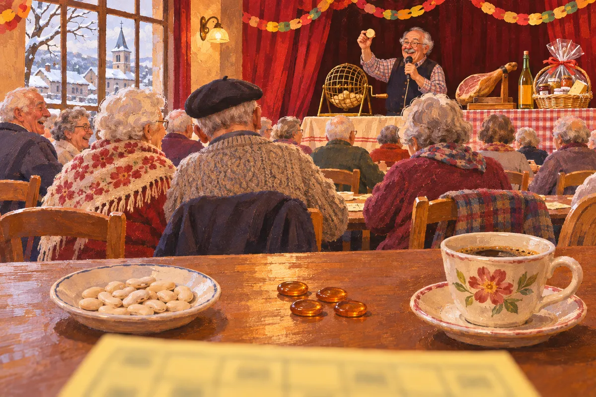

D’Italie aux salles des fêtes
Le loto vient du « lotto », un jeu de tirage né en Italie à la Renaissance. Il passe en France au XVIIIe siècle. Au XIXe siècle, la boîte de loto familial entre dans les maisons, avec ses cartons et ses pions en bois. On y joue pendant les longues soirées d’hiver.
Au XXe siècle, le loto sort des cuisines. Les comités des fêtes, les écoles, les clubs de sport et les amicales l’organisent pour remplir leur caisse. Selon les régions, on l’appelle aussi rifle ou quine. Les lots sont des objets, pas de l’argent : un jambon, un panier garni, une bouteille de cidre.

Comment se joue une partie
Chaque joueur reçoit un ou plusieurs cartons. Un carton a 3 lignes de 5 numéros, entre 1 et 90. Le meneur de jeu tire les numéros un par un et les annonce. Les joueurs couvrent ceux de leurs cartons.
Le premier qui remplit une ligne crie « Quine ! » et gagne le premier lot. On continue avec la double quine, deux lignes sur le même carton, puis le carton plein. Le guide des règles du loto montre chaque étape avec un carton dessiné.
Dans certaines salles, le meneur donne un surnom à quelques numéros : « le 22, les deux cocottes », ou « le 90, le grand-père ». Ces petites formules font sourire toute la salle.
Pourquoi le loto plaît tant après 70 ans
Les règles tiennent en une phrase, et chacun a sa chance, du plus jeune au plus âgé. Chercher un numéro sur un carton fait travailler l’attention et la mémoire, sans jamais presser. Surtout, le loto est un jeu qui se partage : on y retrouve ses voisins, on commente les tirages et on applaudit les gagnants.
Quand la salle des fêtes est loin, ou que l’hiver garde à la maison, une partie sur l’ordinateur prolonge ce plaisir à son rythme.
Nos conseils pour bien jouer
Commencez avec un seul carton. Quand vous trouvez les numéros sans effort, passez à deux, puis à trois. Repérez la colonne d’un numéro avant de chercher : le 47 est toujours dans la cinquième colonne, celle des quarante.
Regardez le tableau des numéros sortis si vous avez un doute. Et n’hésitez pas à crier : au pire, le meneur vérifie et la partie continue.
Jouer au loto sur Jeux de Papi
Notre loto en ligne reprend la salle des fêtes : le sac de pions, les cartons en papier de couleur, les jetons de verre et trois voisins de table. C’est vous qui tirez chaque numéro, quand vous êtes prêt. Les numéros sortis restent au tableau, et un bouton entoure le numéro à couvrir si vous êtes perdu.
Au niveau facile, le numéro à couvrir brille sur votre carton. Il n’y a ni publicité ni compte à créer. Envie d’un autre jeu de hasard ? Essayez le yams ou les petits chevaux.